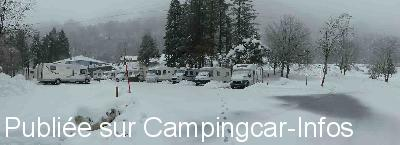
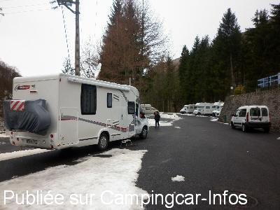
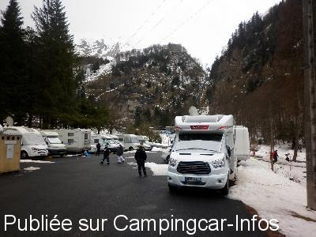
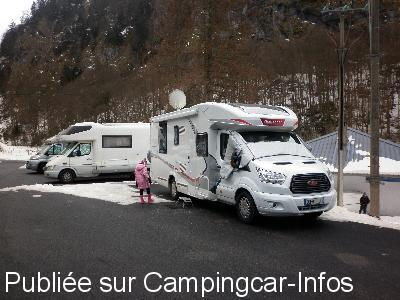
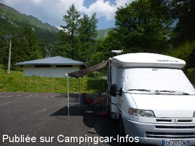
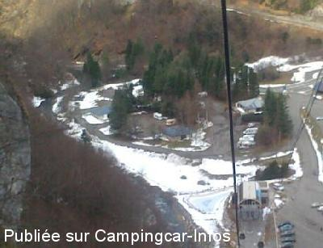

ASN = Aire de services avec stationnement nuit possible de :
EAUX BONNES Gourette
(N° 610)
Accès/adresse :
Plateau de Ley
Gourette
64440 EAUX BONNES
Gourette
64440 EAUX BONNES
Latitude : (Nord) 42.96214° Décimaux ou 42° 57′ 43′′
Longitude : (Ouest) -0.33913° Décimaux ou 0° 20′ 20′′
Tarif : 2016
Stationnement, services : 10 €
Électricité : 5 €
Paiement à l'agent à l'accueil
Type de borne : Artisanale
Services :


Bloc sanitaire chauffé avec eau chaude, douches, toilettes, éviers, à disposition 24 h/24
Autres informations :
Ouvert toute l'année
70 emplacements
Tel : + 33(0)559 537 578
GSM : + 33(0)681 120 969
aire-accueil-ley@orange.fr
http://www.gourette.com/ete/fr

Le 21/03/2016 par BLANBLANDEDROUE_10/03/2016

Le 09/03/2016 par CLIFORD 33

Le 27/02/2016 par CLIFORD 33

Le 27/02/2016 par CLIFORD 33

Le 12/09/2015 par sernic44

Le 22/05/2014 par Cédric
de
Blanchard
le 21/03/2016 :
Nous y avons séjourné 2 semaines en mars 2016,nous avons apprécier le confort simple de cette aire (bâtiment sanitaire chauffé,propre...etc) , et malgré la météo,neige+++,le déneigement était quotidien ainsi que les passages piétons (merci Cédric).Nous y reviendrons.
Nous y avons séjourné 2 semaines en mars 2016,nous avons apprécier le confort simple de cette aire (bâtiment sanitaire chauffé,propre...etc) , et malgré la météo,neige+++,le déneigement était quotidien ainsi que les passages piétons (merci Cédric).Nous y reviendrons.
de
BRIGITTE&JOEL 33
le 09/03/2016 :
Aire très bien entretenue prix 15€ tous compris avec sanitaire 220v
Merci à la commune de : Eaux-bonnes Gourette
Aire très bien entretenue prix 15€ tous compris avec sanitaire 220v
Merci à la commune de : Eaux-bonnes Gourette
de
CLIFORD 33
le 27/02/2016 :
dormir le 15-16/02/2016 sur l'aire d'accueil de LEY a GOURETTE nuit très calme accès station par télécabine en 4 mn (gratuit)gardien très sympatique
tarifs 10€ emplacement + service accès au sanitaire douche chaude + WC + vidange eau grise et cassette
5€ électricité 10amp
Merci le gardien
dormir le 15-16/02/2016 sur l'aire d'accueil de LEY a GOURETTE nuit très calme accès station par télécabine en 4 mn (gratuit)gardien très sympatique
tarifs 10€ emplacement + service accès au sanitaire douche chaude + WC + vidange eau grise et cassette
5€ électricité 10amp
Merci le gardien
de
Richomme
le 30/06/2015 :
Notre but était de faire la route des cols et stationner sur l'aire de Cauterets . Sur notre chemin nous avons trouvé cette Aire .Nous avons été bien accueilli par Cédric le responsable des lieux .Aire reposante, calme , avec eau, 220V sanitaire complet douche etc ....nous sommes restés 2 nuits avant de reprendre notre route .Aire conseillée .
Notre but était de faire la route des cols et stationner sur l'aire de Cauterets . Sur notre chemin nous avons trouvé cette Aire .Nous avons été bien accueilli par Cédric le responsable des lieux .Aire reposante, calme , avec eau, 220V sanitaire complet douche etc ....nous sommes restés 2 nuits avant de reprendre notre route .Aire conseillée .